맵 채집
지도 위 아이콘을 누르면 그 채집 포인트에서 나오는 아이템과 확률이 나옵니다. 위 필터에서 등급・계절과 포인트 종류를 고르고, 아이템 이름을 넣으면 그 아이템이 나오는 포인트만 빛납니다.
시간대등급
종류
확대100%
아이템
 밀림
밀림
밀림 (낮) 密林（昼間）
밀림 (밤) 密林（夜間）
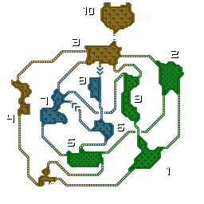
 사막
사막
사막 (낮) 砂漠（昼間）
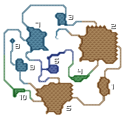
지도에 위치가 없는 포인트
사막 (밤) 砂漠（夜間）
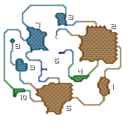
지도에 위치가 없는 포인트
 늪지
늪지
늪지 (낮) 沼地（昼間）
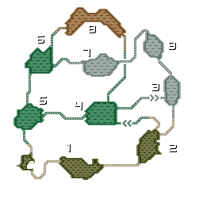
지도에 위치가 없는 포인트
늪지 (밤) 沼地（夜間）
지도에 위치가 없는 포인트
 설산
설산
설산 (낮) 雪山（昼間）
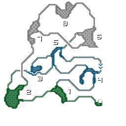
지도에 위치가 없는 포인트
설산 (밤) 雪山（夜間）
지도에 위치가 없는 포인트
 화산
화산
화산 (낮) 火山（昼間）
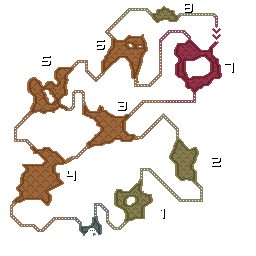
지도에 위치가 없는 포인트
화산 (밤) 火山（夜間）
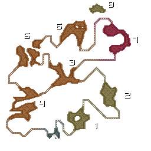
지도에 위치가 없는 포인트
 숲언덕
숲언덕
숲언덕 (낮) 森丘（昼間）
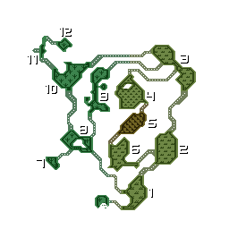
숲언덕 (밤) 森丘（夜間）
 탑
탑
탑 (기슭) 塔（外）
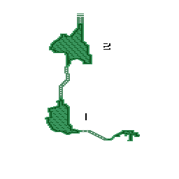
탑 (구조 1) 塔（1）
탑 (구조 2) 塔（2）
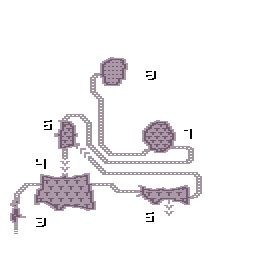
탑 (구조 3) 塔（3）
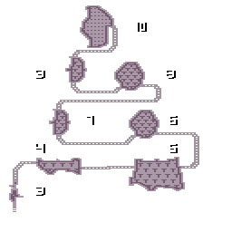
 요새
요새
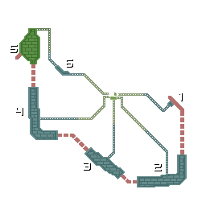
 전투가
전투가
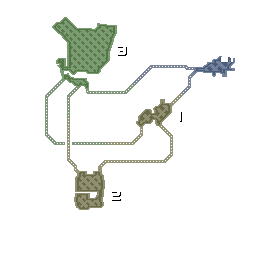
 슈레이드 성
슈레이드 성
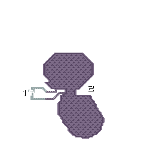
 결전장
결전장
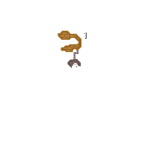
 투기장
투기장
투기장 闘技場
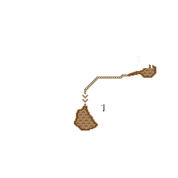
대투기장 大闘技場
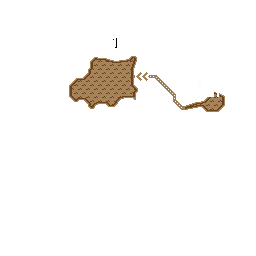